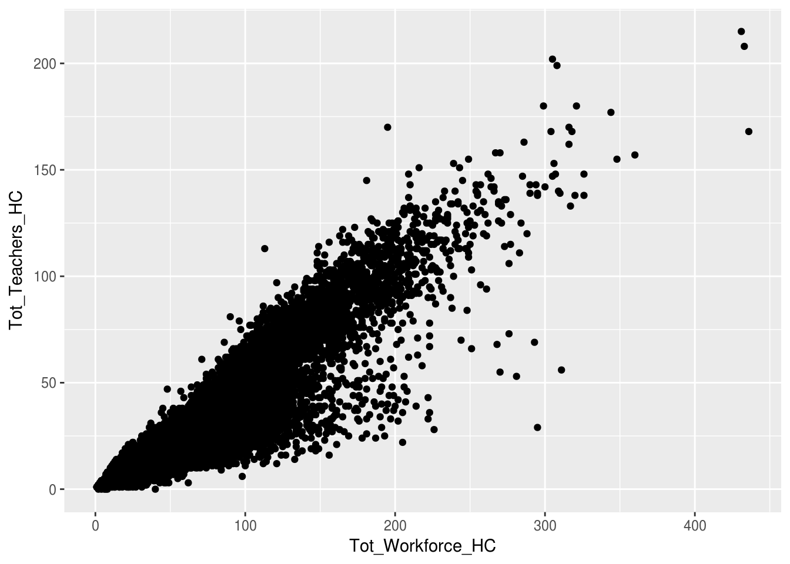
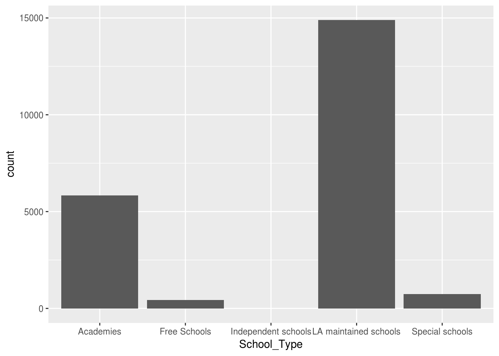
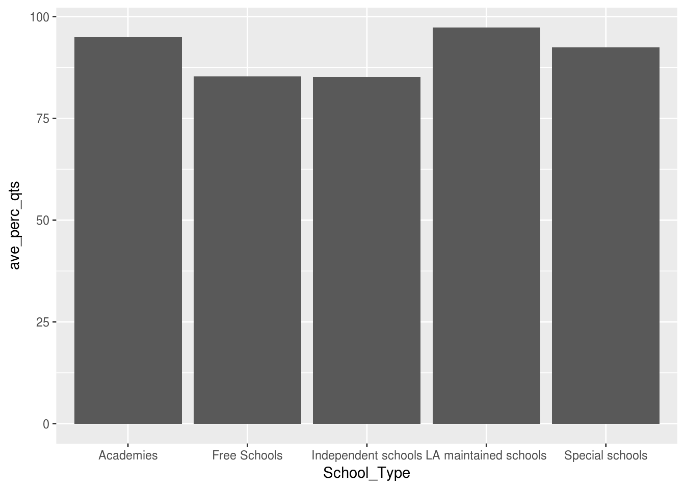
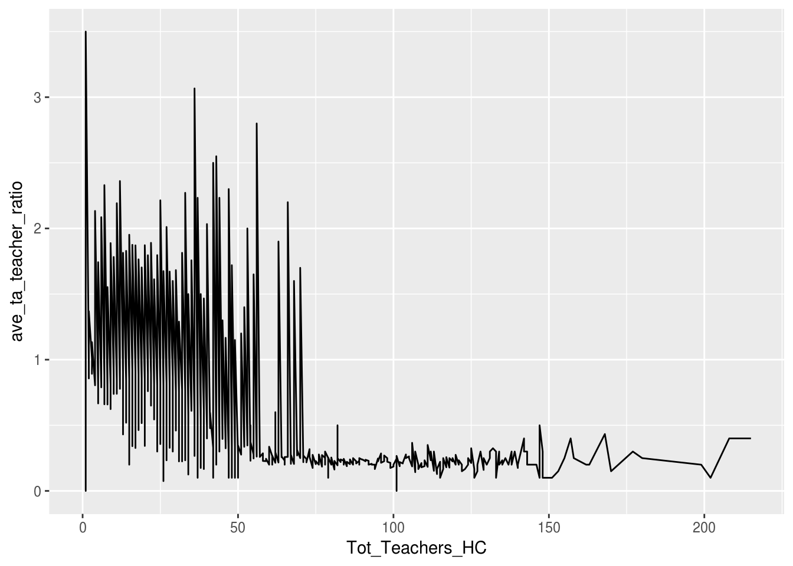
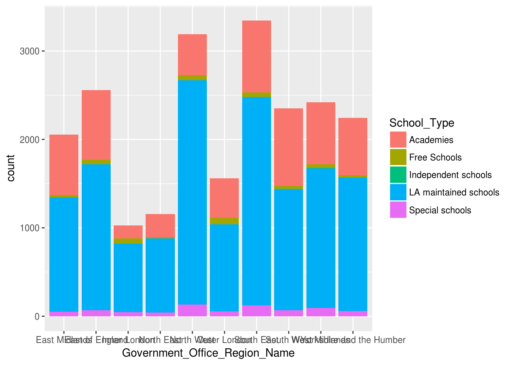

Chapter 6 Graphs
6.1 ggplot2
Another package in the tidyverse is ggplot2, used for plotting anything from graphs to maps.
R has a function built into it to plot graph, unsurprisingly called plot(). However, it’s limited compared to ggplot2, which is part of the tidyverse package.Activity A7.1: Install either the ggplot2 package or the tidyverse package of packages, of which ggplot2 is one. Remember to load it up using library()!
The main function in ggplot2 is ggplot, which stands for the ‘grammar of graphics’. The ‘grammar of graphics’ relates to the three elements that makes up a graphical visualisation:
- A dataset from which the visualisation is built
- Visual marks that represent the data
- A coordinate system - a grid on which the data is plotted
In this section we’ll look at how to plot three different types of graph:
- Scatter plots
- Bar charts
- Line graphs
We’ll also look at how to show how data of different groups can be displayed and how to alter the style of graphs.
First, let’s look at the basic functions:
Let’s break this down:
- The first argument of the main function, ggplot, is the dataset from which the data will come from (the first of our graphical elements)
- The second argument, the aesthetics, in the ggplot function are the specific columns within the dataset which make up the x and y axis (also part of the first of the graphical elements)
- The geom_* functions, where the asterisk details the type of visualisation, is used to detail how the visual marks are displayed (the second of the elements)
- The coords_* functions are optional in defining the coordinate system, but if no functions are included, a standard x-y grid will be produced (the third, and least commonly used of the elements)
- Further multiple and optional styles can be added on
Each of these are joined together with plus signs.
6.2 Scatter plots
A scatter plot is a plot of points where each point is defined by a dataset’s entry’s for two variables, creating x and y axes.
Here we’ll create a scatter plot (or geom_point() as it is known in ggplot) to compare the total workforce in a school and the total teaching workforce.
Activity A7.2: Explain the arguments in this graph.
6.3 Bar charts
We can use bar charts to do simple counts of the number of observations belonging to each level. In the example below we use the geom_bar() function to count the number of schools of each school type:
Activity A7.3: What’s different about the aes() function and why?
However, as well as counts we can use bar charts to display the values within the column of a dataframe. Here we calculate the average percentage of teachers with qualified teacher status for each school type.
ggplot(swfc_16 %>% group_by(School_Type) %>% summarise(ave_perc_qts = mean(Perc_QTS_Teachers,na.rm=TRUE)),
aes(School_Type,ave_perc_qts)) +
geom_bar(stat="identity")
Let’s break down the arguments:
- The first argument within ggplot() is a dplyr script to create a dataframe which contains each school type and its average percentage of qualified teachers. This negates the need to, every time, create a named dataframe.
- The aes() function contains two arguments this time - the x-axis and the y-axis. We need to define a y-axis because we’re going to be using values from a column, not just counts.
- The geom_bar() function contains an argument, stat=‘identity’, which informs the plot that it’s to use the values from a column (in this instance the ave column created in the first argument of ggplot()).
6.4 Line graphs
Activity A7.5: Adjust the code above for the bar graph to produce a line graph:
- Replace geom_bar(stat=“identity”) with geom_line()
- Change the columns used to see how the TA:Teacher ratio (TA_Teacher_Ratio) varies with the total number of teachers in a school (Tot_Teachers_HC).
A word of warning with line graphs though: you can use bar charts and line graphs to display changes between discrete numerical data (e.g. 1,2,3,4,5), but you should not use a line graph to display changes between categorical data (e.g. primary schools, secondary schools, special schools). This is because a line graph implies some sort of continuous variation, so each mark has a ‘distance’ from the previous (e.g. the distance between 2 and 1 is 1), but there’s no ‘distance’ between primary school and secondary school.
ggplot(swfc_16 %>% group_by(Tot_Teachers_HC,School_Type) %>% summarise(ave_ta_teacher_ratio = mean(TA_Teacher_Ratio,na.rm=TRUE)),
aes(Tot_Teachers_HC,ave_ta_teacher_ratio)) +
geom_line()
6.5 Displaying a third variable
We can use ggplot to plot three variables, not just two on the x and y axes. This allows the viewer to get a more detailed breakdown of the data, without having to produce multiple graphs.
There are three different arguments which can be added to the aesthetic function (as they’re going to change how the graph looks), depending on what type of graph is being produced:
- fill= is used for bar graphs - this splits up each bar with different colours related to the proportion of each category making up that bar
- col= is used for line graphs - this creates lines of different colours for each different category to show how it varies
- size= is used for scatter plot - the size of each point relates to the value in the column
In all of these arguments, after the equals sign comes the variable name that we want to plot.
Here’s an bar chart example which uses fill which shows the proportions of each type of school which make up each region. 
Activity A7.6: Use col to adapt the line graph above to show how different each different school type’s TA:Teacher ratio varies with size of school.
Finally, we’re going to use size to show a third variable on a scatterplot.
Activity A7.7: Use the group_by and summarise functions in dplyr to create a dataframe which has four columns:
- Government Office Regions
- The average pay (Mean_Gross_Salary_All_Teachers_Sterling) for each of those regions
- The average percentage of teachers receiving allowances (Perc_Receive_Allowance_Qual_Classroom_Teachers) in each region
- The number of schools in each region (use n())
Your code in the summarise function will look something like:
Activity A7.8: Pop your dataframe code from the activity above into a ggplot function, and create a scatter plot with the col argument as the region and the size argument as the number of schools in that region.
It may seem like it should be fill not col for colouring points, but remember that a point shouldn’t really have a size - it’s an exact location, so there’s nothing to fill!
6.6 Styles
So, we’ve produced a number of graphs now, but they’re not the best formatted in places…
Fortunately, one of ggplot’s major selling points is that it’s really versatile with the formatting that can be done.
Here are a few handy functions, all of which are added with a plus sign after you’ve detailed what plot you want:
- coord_flip() flips the coordinates, so the x axis is on the y axis and vice versa. This is really useful for bar graphs, to prevent labels overlapping
- ggtitle() allows you to specify a chart title - the argument within this function is enclosed in quotes and details what title is required
- xlab/ylab specify the x and y axis labels respectively and again the argument, which is the label, is enclosed in quotes
- theme_minimal() removes the grey background, which immediately makes it look nicer!
- xlim/ylim specifies the limits for continuous axes on the x and y axes respectively. They take two arguments - the lower limit and the upper limit, separated by a comma.
Activity A7.9: Apply all of these functions to the graphs you’ve previously produced.